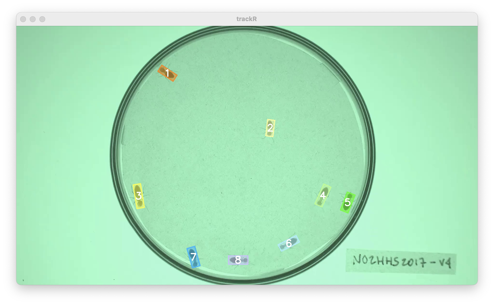

0 - Introduction
Once you have finished tracking a video, you can manually inspect the
results and fix any potential error using the trackFixer
app provided with the package. You can launch trackFixer by
typing the following command in the R console:
1 - Data module

Once trackFixer has started, it will open two windows: a
display window that will later be used to display the video with the
tracks overlaid on top (note: this window may be hiding behind other
windows) and the window shown here that will display all the app
controls.
The first step is to open the video and track files using the
dedicated buttons in the control panel. Each button will open a
navigator that you can use to find and select the video that was used
during tracking and the CSV file that was produced by
trackR after tracking was completed.
Note that the CSV file is never modified by trackFixer.
Instead, trackFixer will save the tracking corrections to a
separate file in order to never destroy the original tracking
results.
2 - Fixing module

As soon as the video and track files are opened,
trackfixer will automatically switch to its “Fixing module”
displayed in the image opposite and will show the video in the display
window with the tracks overlaid (see image below).
At the bottom of the control panel, there is a
Display size control slider that allows you to change the
size of the display window, for instance if the video is too wide for
the screen.
At the top of the control panel, you will find the video controls
that allow you to:
- Play and pause the video with the
Play/pause button or
with the space bar of your keyboard.
- Advance or rewind the video by 1 frame with the
>
and < buttons or with the right and left arrow keys of
your keyboard.
- Advance or rewind the video by 1 second with the
>> and << buttons or with the up
and down arrow keys of your keyboard.
- Move to any frame of the video with the slider below the video
control buttons.
Below are 6 buttons that allow you to perform a number of correcting
operations if you find that trackR made a mistake during
tracking:
- The
Reassign button (or the “q” key of your keyboard)
will open the reassignment menu. When the menu has opened, you can use
the first dropdown selector to select which track to assign a new number
to or to reassign to a previously existing track. You can then type in
the input box below the number you would like to assign to the
track.
- The
Remove button (or the “w” key of your keyboard)
will open the removal menu. When the menu has opened, you can use the
dropdown selector to select which track to remove.
- The
Swap IDs button (or the “e” key of your keyboard)
will open the ID swapping menu. When the menu has opened, you can use
the 2 dropdown selectors to select which tracks to swap. Note that
swapping will occur from that frame on. Previous frames will not be
affected and tracks will retain their original ID.
- The
Merge IDs button (or the “r” key of your keyboard)
will open the ID merging menu. When the menu has opened, you can use the
2 dropdown selectors to select which tracks to merge together. Note that
the resulting track will retain the ID of the first selected track.
- The
Undo button (or the “a” key of your keyboard) will
undo any change made during the fixing session in the reverse order that
they have been made.
- The
Save button (or the “s” key of your keyboard) will
save the modifications that you have made during the fixing session.
These modifications are saved in a different file than the one
containing the original tracking results to prevent accidental
modifications to permanently damage the original results. The modified
file will have the same name and be saved at the same location as the
original file but with “_fixed” appended to its name. Note that if you
interrupt your fixing session before the end of the video, you can
resume it by loading the “[original_file_name]_fixed.csv” file instead
of the original one. In this case, any new correction will also be saved
to the “[original_file_name]_fixed.csv” file.
Finally, some basic statistics about the tracks are displayed below
the fixing controls. These can be useful to track your progress during a
fixing session. For instance, if the statistics table shows that your
file contains 10 tracks but you know you only had 8 individuals in your
experiment, this is a good indication that some errors remain to be
fixed.

3 - Output data
Once you click the Save button in
trackFixer, the data that is saved in the
“[original_file_name]_fixed.csv” file has the same columns has those
saved originally by trackR (see here for more details).
The file will also contain 2 additional columns:
-
track_fixed is the identity of the tracked object after
the corrections have been applied. The track column retains
the original, uncorrected identity.
-
ignore indicates whether you can ignore (TRUE) or not
(FALSE) the corresponding row when you analyze the data. Ignored rows
are those, for instance, from tracks that you have chosen to remove or
merge with another track.
You can now proceed to the rest of the tutorials.
The video used throughout this tutorial was provided by Sridhar,
V. H., Roche, D. G., and Gingins, S. (2019). Tracktor: Image-based
automated tracking of animal movement and behaviour. Methods Ecol. Evol.
10, 691. doi:10.1111/2041-210X.13166 and used here with
permission of the authors.